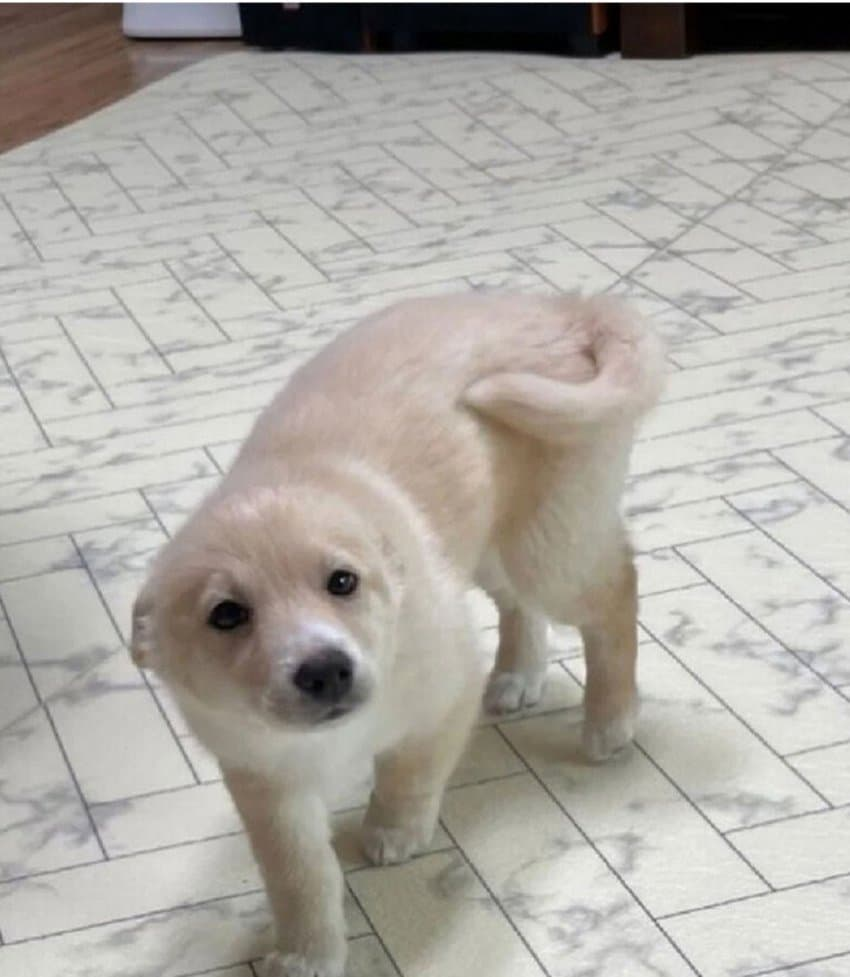
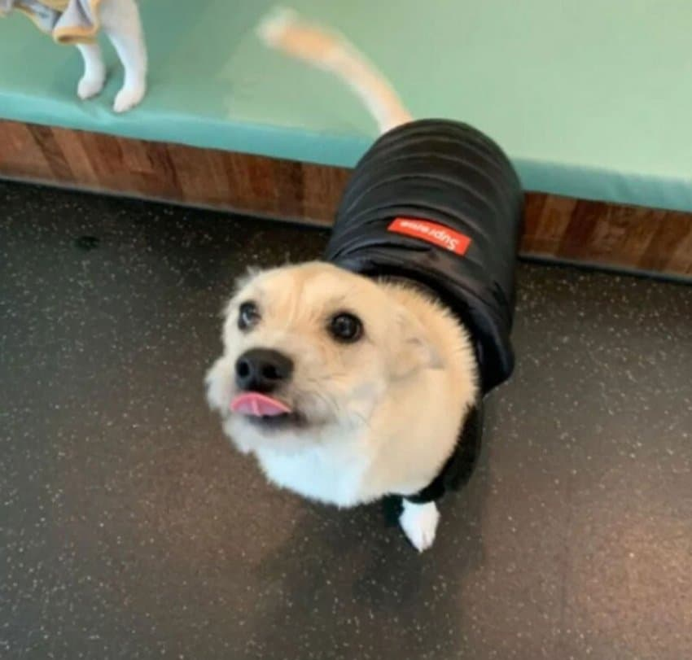
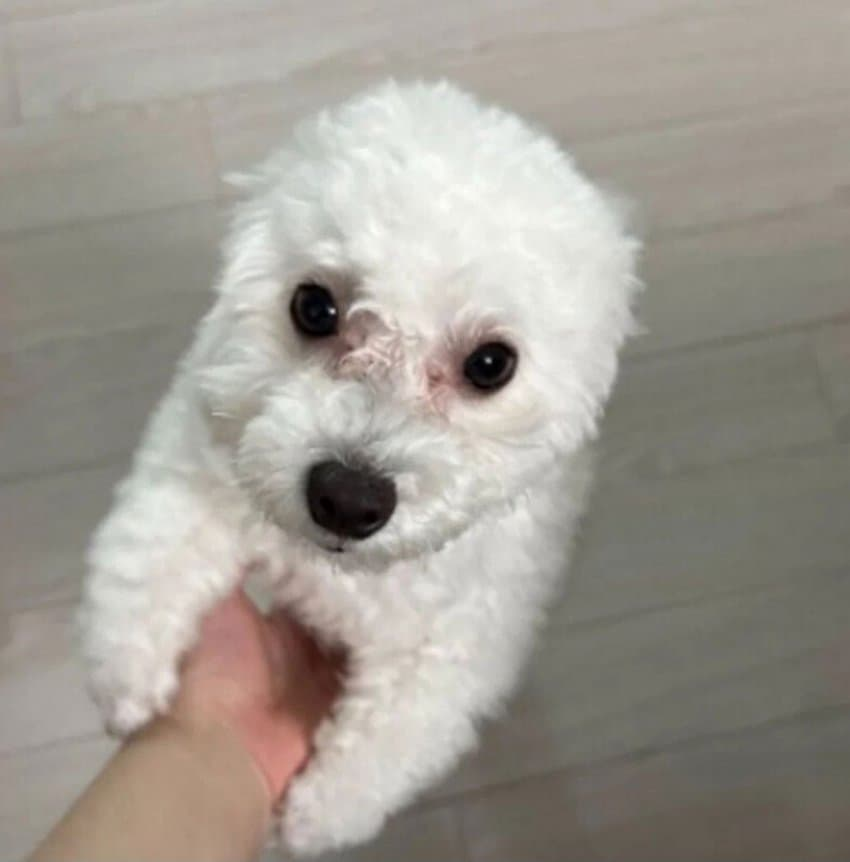
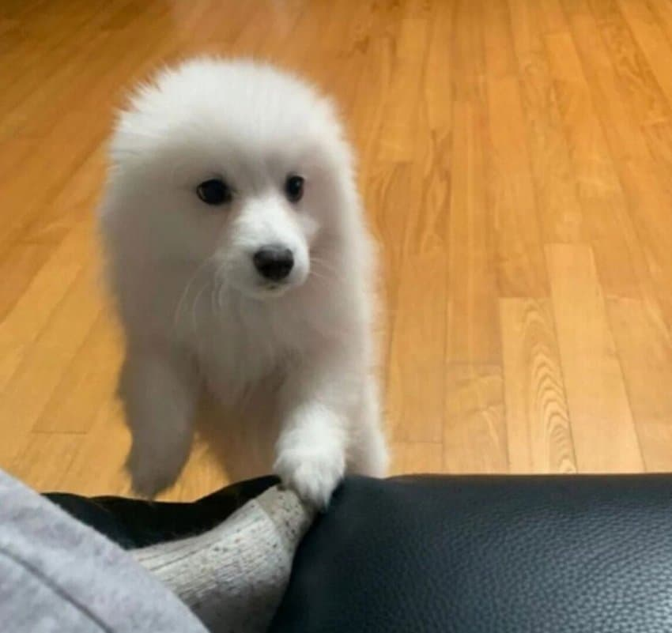
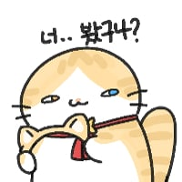

사람만 나타나면 귀 사라짐




사람만 나타나면 귀 사라짐
귀없는 괴렘콘
올려다보면 목아프다던데도 참고 눈마주치려고 애쓰는거 너무 가엾고 기특해
귀없네

이거 완전 이렘?!...

물개 될 때 ㄹㅇ 귀여워서 미쳐버림
ㅋㅋ신나서 꼬리흔들다가 신남을 주체못하고 궁둥이까지 흔들때도있음 졸귀
좁밥한텐 안저럼
ㅈㄴ 귀엽네 바로 저장
귀수납이 졸귀긴해 ㅋㅋ